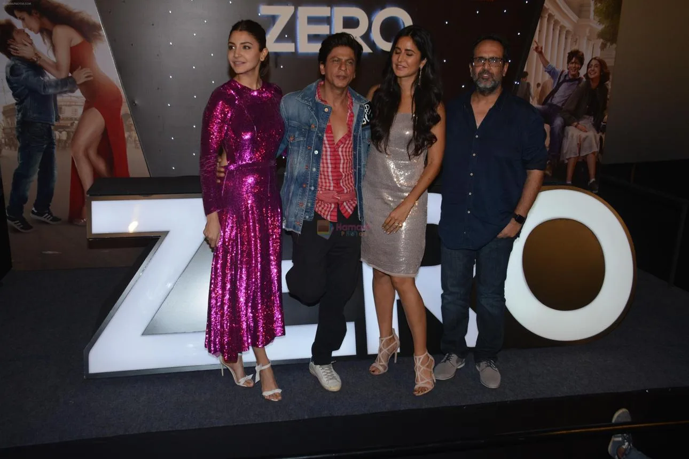

Part III · The Years of the Apparent Lull, 2014 to 2018 · 20 of 57
Chapter 18 · Five Conclusions
- Ra.One set the franchise ambition. Its significance was the attempt to make a film character live beyond the film, through games, merchandise, technology and a relationship with the audience.
- Chennai Express set the benchmark for an integrated campaign. Its innovation was the combination: participation, original digital products, coordinated fan clubs, analytics, brands and creative decisions changed every day.
- Later campaigns kept individual innovations but not the architecture. Happy New Year, Dear Zindagi, Jab Harry Met Sejal and Zero all experimented. Their innovations were tied to one film, one campaign or one platform.
- Zero is the most important qualification. Bauua Ki Toli, the character’s own accounts, the Alexa skill and the Snapchat lens show real digital ambition in 2018. Any claim of a complete withdrawal from innovation has to answer for them.
- The gap is in sustained, technology-led franchise building. The evidence shows a less consistent continuation of the integrated model. It does not, on its own, explain why, or who decided.

The Zero trailer launch, November 2018. (Image: Final Thesis archive)
(Analysis, on the evidence of Chapters 10 to 17)
In one sentence: between Ra.One and Chennai Express, his film marketing joined technology, fan participation, original entertainment products, merchandise and data into one system; from 2014 to Zero in 2018, single campaigns kept inventing, but the system was not rebuilt; his personal involvement is documented in the first period, and the reasons for the change in the second are not yet on the record. (Analysis)
Zero opened on 21 December 2018. Four months later, in Beijing, where it closed the Beijing International Film Festival, he told CGTN: “Maybe I made the wrong film.” If something does not excite you in the morning, he said, you should not wake up. (Fact. Gulf News / IANS, 19 Apr 2019) Then he did something no one expected. He stopped. His next lead release would be more than four years away. (Fact)
In the language of this book, Zero is the 0 in Zero to One: the lowest point, and the start of the climb. And then, nothing.
The industry caught up
The first conclusion can be tested from outside his films. Ra.One’s reported online spend, about ₹15 crore of a ₹52 crore marketing budget (Chapter 10), comes to about 29 per cent. (Analysis, arithmetic from Chapter 10) Six years later the norm was half that. A December 2017 report by ESP Properties, the entertainment and sports arm of GroupM, put digital at 10 to 15 per cent of a film’s marketing budget in India, against 45 to 50 per cent for television, 10 to 15 per cent for print and 25 to 30 per cent for activations. (Fact. Social Samosa, 15 Dec 2017)
The second edition of that report, covering 2018, counted ₹606 crore spent on marketing Indian films that year, across 1,087 releases (951 in 2017). Television took 47 per cent (₹285 crore) and digital 28 per cent (₹170 crore). (Fact. exchange4media, 28 May 2019; the headline rounds the total to ₹600 crore)
| Year | Whose spend | Digital share of marketing spend | Source |
|---|---|---|---|
| 2011 | Ra.One, one film | About 29% (₹15 cr of ₹52 cr) | Chapter 10 |
| 2017 | Films in India, typical budget | 10–15% | Social Samosa, 15 Dec 2017 |
| 2018 | All Indian films, 1,087 releases | 28% (₹170 cr of ₹606 cr) | exchange4media, 28 May 2019 |
Read together, the rows say the rest of the industry reached in 2018, by share of spend, roughly where Ra.One stood in 2011. That sharpens the fifth conclusion: what thinned after 2013 was not money moving online, which every studio did, but the franchise layer built on top of it. The comparison is rough. One row is a single film’s reported budget, the others are averages from a media agency’s report, and “online” and “digital” may not be counted the same way. (Analysis; Method note)
The fourth conclusion gains one more item. Days before Zero opened, Red Chillies unveiled Bauua Ki Dukaan, a line of the film’s merchandise: mugs, headphones, mobile covers, badges, T-shirts and personalised autograph posters. (Fact. Licensing Corner, 16 Dec 2018) Where the line was sold and how much of it sold are not in the public record: N/A. (Method note)
What the agency reports say about the franchise layer
The December 2017 ESP Properties report also priced the brand side of film marketing. It put co-branded marketing media spend for Hindi films at about ₹100 crore a year, and a film’s marketing budget at 10 to 15 per cent of its production budget. (Fact. exchange4media, 14 Dec 2017) From 2015 to 2017 it counted at least one FMCG co-branded film campaign a month, with around 13 brands active. (Fact. same)
The 2018 edition, Showbiz 2.0, measured what the money bought at the top. The 40 films with the biggest opening weekends spent on average ₹4.46 crore each on television for 321,000 seconds of airtime, nearly twice the rest; their YouTube trailers drew almost 50 million views, over 4.8 times the average for the other films. (Fact. exchange4media, 28 May 2019) Of the year’s ₹606 crore, print took 7 per cent and outdoor 6 per cent. (Fact. PrintWeek, on the 2018 Showbiz report, page undated)
The same 2018 report looked back. It named Krrish, Ra.One and A Flying Jatt as superhero films that had “conquered successful merchandise sales”, and expected domestic superheroes to see a new dawn of franchising. (Fact. exchange4media, 28 May 2019) Seven years after its release, the industry’s own media agency still cited Ra.One as a merchandise precedent, in the year Zero sold mugs and badges. That supports the first and fifth conclusions together: the franchise layer was recognised as an asset outside his company, while his own films after 2013 did not rebuild it. (Analysis)
Neither report publishes figures for single films, so whether Zero was among 2018’s top 40 openers, and what its own campaign spent, is N/A here. (Method note)